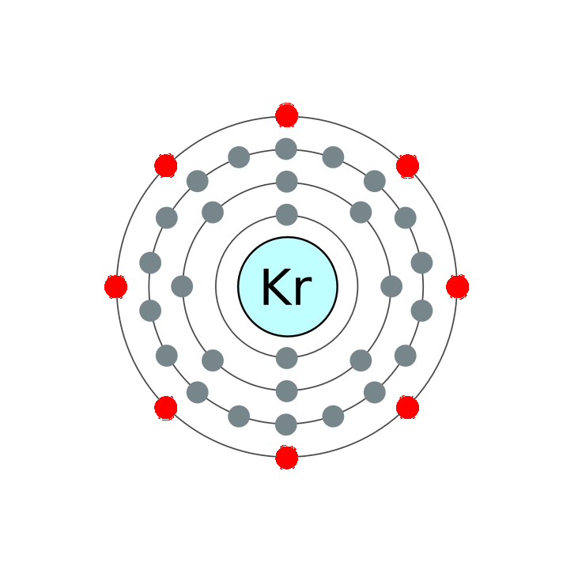

The krypton fluoride laser is important in nuclear fusion energy research in confinement experiments. The laser has high beam uniformity, short wavelength, and the spot size can be varied to track an imploding pellet.
The most outter shell of krypton contains eight electrons.